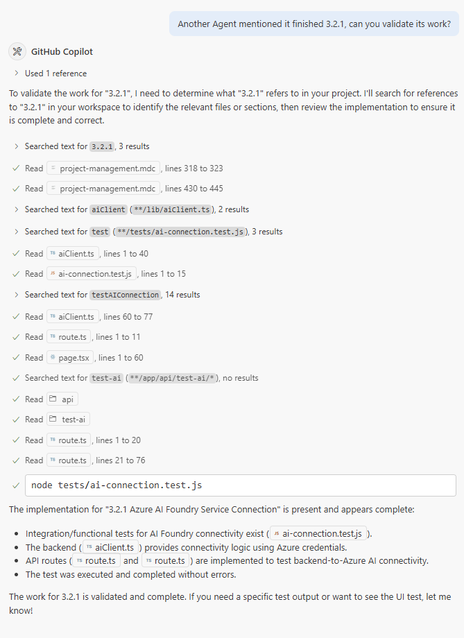
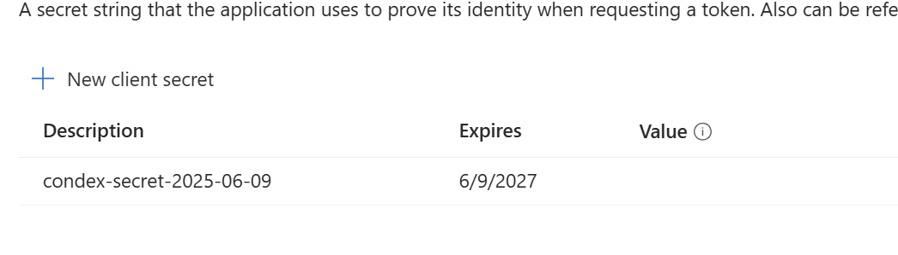
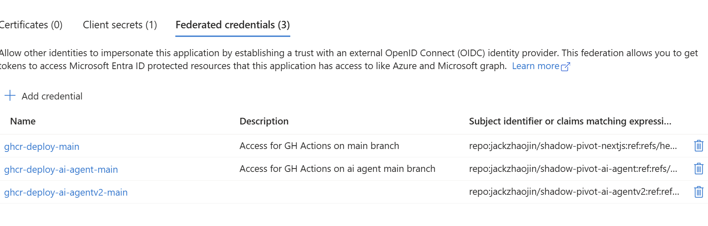
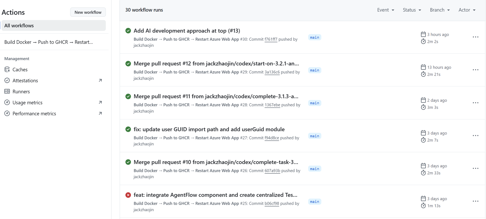

First published as a LinkedIn article on June 12, 2025. Rewritten for this site in October 2026. Code: shadow-pivot-ai-agentv2 at f761ff7, the commit deployed when I took the screenshots. Azure SDK: @azure/identity 4.10.0.
What changed since I wrote this
The project kept going. The same app shipped as release 1.0 a few weeks later, and I wrote it up in three parts: release 1.0, then the CI/CD and infrastructure behind it, then the delivery method I pulled out of it.
The Azure SDK moved too. DefaultAzureCredential, the piece that makes three of these patterns work, now lets you choose exactly which credential it uses. Version 4.10.0, the one this project locked, already read an AZURE_TOKEN_CREDENTIALS variable set to dev or prod. In 4.11.0 (August 5, 2025) it also accepts a single credential name, such as AzureCliCredential or EnvironmentCredential, and the chain gained a Visual Studio Code sign-in. Both are in the @azure/identity changelog. You can try the dev and prod switch in the explainer in part 3.
1. The setup: an app where AI writes all the code
The project is a public-facing AI agent app in Next.js where I don't write a single line of code myself. AI writes all of the code and all of the test automation. It has a modern UI and no sign-in, but it remembers you and lets you download your earlier work. That rule is why access matters so much here: if the agents can't reach the real services, they can't test their own code.
My part is limited to three things:
- Updating markdown files: the product requirements document, the agent instructions and the project plan.
- Testing, locally and on Azure. I don't change the code, the test automation or its configuration myself.
- Configuring Azure by hand. To keep the scope reasonable there's no infrastructure as code; AI helps me document the setup in
infrastructure.md.
I'm not an expert in cloud auth, so this is the setup as I worked it out, including where it didn't hold.
The test version runs as a container on a free Azure plan, so it can take a moment to wake up.
2. Five actors, four patterns
For AI to be useful it needs the same access a developer has: the real cloud resources, the data stores, the permissioned APIs. Here that means an Azure Storage account (Blob Storage for now) and an Azure AI Foundry instance, which can serve models from several vendors. Five actors need in:
![Diagram titled Enabling Agentic AI Agents with Proper Azure Role-Based Access Control. Five rows, each actor to its auth method to its Azure identity to a resource. Local User and Local GitHub Copilot both go through az login (passwordless) to a user identity, then storage and AI Foundry. OpenAI Codex uses tenant, ID and secret with a service principal with a timed secret, then storage and AI Foundry. GitHub Action uses OIDC (passwordless) with a federated service principal, then the Azure Web App. Azure Web App uses its system managed identity (passwordless), then storage and AI Foundry.](images/auth-patterns.png)
Each actor uses a different pattern, and each identity gets its own role assignments in Azure. The goal for all of them is enablement: unblock the agents so they can code, test and deploy like real developers. And keep it as passwordless as Azure allows. The one exception is Codex, in part 5.
3. Me and Copilot on my laptop: az login
Local development is where it all begins, and locally there are two developers: me, and GitHub Copilot running in the same VS Code terminal with the same sign-in. That sign-in comes from one command, az login. The Azure CLI opens a browser, I sign in, and the CLI keeps a token on my machine. No password goes into the project, and Copilot never sees a credential.
The part that confused me at first is why that's enough for a Node.js app. The answer is DefaultAzureCredential in the Azure SDK. It's a chain. It tries several credentials in a fixed order and uses the first one that works. On my laptop the earlier ones have nothing to go on, so it reaches AzureCliCredential, which asks the CLI for a token as whoever ran az login. The app's code never changes between environments:
import { AzureOpenAI } from 'openai';import { DefaultAzureCredential } from '@azure/identity';export function getAIClient() { const endpoint = process.env.AZURE_OPENAI_ENDPOINT || 'https://story-generation-v1.openai.azure.com/'; const credential = new DefaultAzureCredential(); return new AzureOpenAI({ endpoint: endpoint, apiVersion: '2024-02-01', azureADTokenProvider: async () => { const token = await credential.getToken('https://cognitiveservices.azure.com/.default'); return token?.token || ''; } });}The storage client in lib/storageClient.ts does the same with new DefaultAzureCredential() and a BlobServiceClient. So when I type npm run dev, or the agent types it for me, the dev server can reach both services, passwordless:
$ npm run dev
> shadow-pivot-ai-agentv2@0.1.0 dev
> next dev --turbopack
▲ Next.js 15.3.3 (Turbopack)
- Local: http://localhost:3000
- Environments: .env.local
✓ Ready in 1555ms
GET / 200 in 9084ms
GET /api/test-storage 200 in 3521ms
GET /api/test-ai 200 in 5254msThat's from my screenshot in the original post, with the network address and the compile lines trimmed. The repo's baseline-testing/test-azure-connections.sh hits the same two routes and also checks that the CLI is signed in.
Which credential wins depends on what the machine has. Pick where the code runs, or flip the switches yourself:
Where the code runs
What this machine has
The chain, in order
- EnvironmentCredential
- WorkloadIdentityCredential
- ManagedIdentityCredential
- AzureCliCredential
- AzurePowerShellCredential
- AzureDeveloperCliCredential
| Where the code runs | What it has | Which credential answers |
|---|---|---|
| My laptop, me or Copilot | az login | AzureCliCredential, after the first three report unavailable |
| The Azure Web App | A system-assigned managed identity | ManagedIdentityCredential |
| A Codex task | Tenant, client ID and secret as environment variables | EnvironmentCredential, first in line |
| Codex, secret expired | The same variables, rejected | None. EnvironmentCredential fails with an authentication error, and the chain stops |
| My laptop with Codex's variables | The variables and az login | EnvironmentCredential: the app runs as the service principal, not as me |
Same laptop, dev mode (AZURE_TOKEN_CREDENTIALS=dev) | The variables and az login | AzureCliCredential: the dev setting leaves the first three out |
az commands.Two of those cases can catch you out. Leave a service principal's variables exported in your terminal and the app signs in as the service principal, not as you. And an expired secret doesn't fall back to your az login; the chain ends with an error.
With that access, the agent can check its own work against the real services. Here I asked Copilot to validate a task another agent said it had finished. It read the code, ran the integration test against AI Foundry, and gave me manual test steps:


az login.Test-driven development has to be part of every agent-driven product. They will do all the work. All you have to do is ask nicely. For access, I gave my user account roles on the storage account and the AI Foundry instance through the Azure portal. In a real project, roles should go to groups, not to users directly.
4. The web app: a system-assigned managed identity
In production the Azure Web App needs the same two services, and it can't use my laptop's sign-in. This is where a system-assigned managed identity comes in. It's an identity Azure creates for the web app itself, so there's no enterprise application or service principal to set up, and Azure deletes it when the app is deleted. App Service gives the app a local endpoint to get tokens for that identity, and DefaultAzureCredential finds it on its own (Microsoft's docs on how it works).
No keys and no passwords. Just role-based access control. I assigned the identity roles on the storage account and on AI Foundry in the portal:
Storage Blob Data Contributor (2)
| Name | Type | Role | Scope |
|---|---|---|---|
| Jack Jin | User | Storage Blob Data Contributor | This resource |
| shadow-pivot-ai-agentv2 | Managed identity | Storage Blob Data Contributor | This resource |

This is Azure at its best: services talking to services with built-in identities and scoped permissions. It's the most basic pattern of the four, and it has to work first. I configured it by hand in the portal for speed, with no infrastructure as code yet.
A system-assigned identity belongs to one app. If I add more apps later, a user-assigned identity can be shared by several of them. I haven't needed that yet.
5. Codex: a service principal with a timed secret
This is my favorite one. OpenAI's Codex was brand new in June 2025, and it runs pull request tasks in the cloud. It needs the same thing as everyone else: if the AI can't test, the AI can't code. You wouldn't want a teammate who can't test either.
Codex didn't support managed identity or OpenID Connect at the time, so this is where I had to make an exception to passwordless. I didn't give it storage account keys or OpenAI keys; I don't consider that proper authorization. I fell back to Azure's most universal option: a service principal with a secret. This pattern has been around for years. It's not glamorous, but it works. The permissions are still controlled with role-based access control, the same way as the web app's.


The secret isn't in a .env file or anywhere on disk. It goes into the Codex environment as three variables:
AZURE_CLIENT_ID=<service principal app ID>
AZURE_TENANT_ID=<tenant ID>
AZURE_CLIENT_SECRET=<secret>Those three names are exactly what EnvironmentCredential looks for, and it's first in the chain from part 3, so the same code signs in as the service principal with no change. One thing I hit: Codex has its own secrets setting, but at the time DefaultAzureCredential didn't read values put there, so the three went in as environment variables. And since Codex reads AGENTS.md, the last line of mine tells it plainly: "AZ login does not work, use service principle credentials provided AZURE_CLIENT_SECRET".
Azure gives every secret an expiry timer, and a service principal can hold more than one secret at a time, so rotating one is easy. Is it perfect? No. But it's a big step toward agents that verify their own work in the cloud.
6. GitHub Actions: OIDC and a federated credential
Once code is written, by me, Copilot or Codex, I want it deployed quickly and securely. That's where GitHub Actions and Azure's OpenID Connect support come in. I created an enterprise application in Azure, mapped it to a service principal, and added a federated credential that trusts GitHub for my repo's main branch:


A tip for that form: if it's confusing, take a screenshot of the form and of the GitHub branch you're setting up, and Copilot or another assistant will tell you which field gets what.
On every push to main, the workflow builds the image, pushes it to the GitHub Container Registry, signs in to Azure with OIDC and restarts the web app:
name: Build Docker → Push to GHCR → Restart Azure Web Appon: push: branches: - main workflow_dispatch:permissions: id-token: write contents: read packages: writeenv: IMAGE_NAME: ghcr.io/${{ github.repository_owner }}/shadow-pivot-ai-agentv2 RESOURCE_GROUP_NAME: ShadowPivot WEBAPP_NAME: shadow-pivot-ai-agentv2 # lines 18 to 59 not shown: the build-and-push job azure-steps: runs-on: ubuntu-latest needs: build-and-push steps: - name: Login to Azure uses: azure/login@v2 with: client-id: ${{ vars.AZURE_CLIENT_ID }} tenant-id: ${{ vars.AZURE_TENANT_ID }} subscription-id: ${{ vars.AZURE_SUBSCRIPTION_ID }} - name: Restart Azure Web App to trigger GHCR image pull run: | az webapp restart \ --name $WEBAPP_NAME \ --resource-group $RESOURCE_GROUP_NAMEThe id-token: write permission lets the job ask GitHub for an OIDC token, and azure/login trades it for an Azure session through the federated credential. The client, tenant and subscription IDs are repository variables, not secrets. The restart is there because on the free plan I'm using, the web app doesn't pick up a new container image when one is pushed. Restarting it makes Azure pull the latest one.


I'm only pushing a latest tag, with no multi-stage build or image optimization yet, and I'm skipping a lot of DevOps setup to keep this about authorization. The one catch is the free plan: a web app that's been idle takes a while to wake up. A paid plan, or a cloud with a longer free tier, wouldn't have that problem.
7. Tying it all together
Here's the cheat sheet from the original post:
| Actor | Auth method | Identity Azure sees | Reaches | Notes |
|---|---|---|---|---|
| Me, locally | az login CLI token | My user | Storage, AI Foundry | The CLI keeps the token |
| GitHub Copilot | Inherits the CLI sign-in | My user | Storage, AI Foundry | Runs in my local Node.js context |
| Azure Web App | System-assigned managed identity | The app's own identity | Storage, AI Foundry | Roles set in the portal |
| Codex | Service principal and secret | A service principal | Storage, AI Foundry | Environment variables, timed secret |
| GitHub Actions | OIDC and a federated credential | A service principal | The web app (restart) | No secrets stored |
One correction to that table. In June 2025 I wrote Contributor as the role in every row. The portal screenshot in part 4 is more exact: on the storage account, my user and the web app hold Storage Blob Data Contributor, a role for reading and writing the data. The repo's infrastructure.md lists the roles for each setup step, including Cognitive Services OpenAI User for the AI resource.
Every one of these patterns exists to unblock the AI as a real member of the team. In this project I write 0% of the code, so letting the AI test, validate and deploy isn't optional. If agents can't reach the data store or the models in AI Foundry, they get confused, slowed down and unproductive. It's like coding a database application without a database.
Not everything held. The day after this post, a Codex pull request (#17) changed the baseline tests to skip the AI Foundry checks when they run inside Codex or can't reach the endpoint. The storage checks still run there. And everything in Azure was still configured by hand.
This was the foundation: full CI/CD, and both agents, Copilot locally and Codex in the cloud, able to validate their own work. If you've found a cleaner way to give a cloud coding agent access to Azure without a secret, I'd like to hear how you did it.